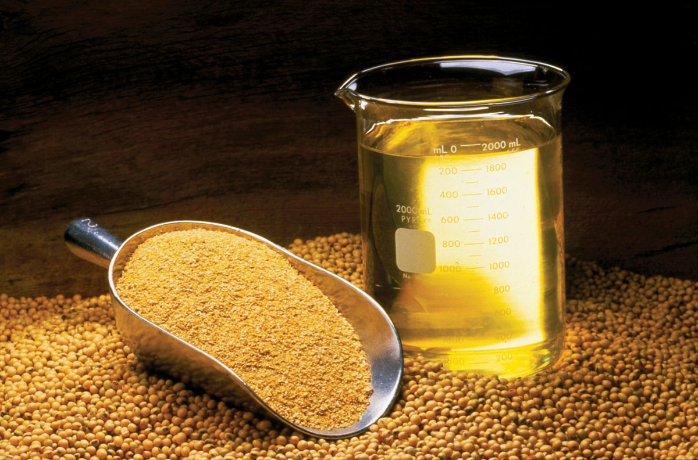

17,5 mil curtidas. 922 comentários.

Duas crises, mesmo ano, causas diferentes

Gripe aviária derruba o plantel de poedeiras: mais de 166 milhões de aves abatidas desde 2022. A dúzia sai de US$ 0,80 em 2019 para um recorde de US$ 6,23 em março de 2025.
O país não registrou gripe aviária em aves comerciais. Mesmo assim o ovo encareceu, porque a ração ficou mais cara: o milho subiu, com a área plantada na menor da série histórica da Conab.
Mesma crise, custo para uns, lucro para outros

Em 2026, o Departamento de Justiça dos Estados Unidos processou três granjas (Cal-Maine, Versova e Hickman's) por inflar, entre 2022 e 2025, a cotação de referência usada por supermercados e restaurantes no país.
Em novembro de 2025, a Hickman's foi comprada por cerca de US$ 300 milhões pela Mantiqueira, do grupo JBS.
Sem gripe aviária, e mesmo assim mais caro

A alta brasileira nasceu na ração, não no aviário. O milho encareceu, com a área de milho verão na menor da série histórica da Conab, desde 1976 e 1977.
A ração é o maior custo de produção de ovos, e o milho é a maior fração da ração. Quando o milho sobe, o ovo sobe, mesmo sem nenhum problema sanitário no aviário.
40 ovos por dia

No BBB25, a atriz e fisiculturista Gracyanne Barbosa foi a única pessoa desta história inteira que fez uma conta em vídeo, calculando quantos ovos precisaria levar para casa se ficasse confinada por três meses.
40 ovos por dia é uma afirmação de dieta extrema que circulou sem verificação nenhuma. Serve aqui como âncora de cálculo, não como modelo nutricional. Ela parou na primeira camada. E se a gente não parar aqui?
O que é um sistema alimentar

Um sistema alimentar reúne tudo que produz, transforma, distribui e consome alimentos numa sociedade, junto com o ambiente, a economia, a política e a saúde que atravessam esse processo.
O caso do ovo mostrou isso na prática: genética e clima do lado biológico, custo e exportação do lado econômico, hábito alimentar do lado social, tudo entrelaçado numa única caixa de ovos no mercado.
A cadeia produtiva de um único produto, que veremos daqui a pouco, é um recorte dentro desse sistema maior.
Duas cadeias do Rio Grande do Sul, lado a lado
